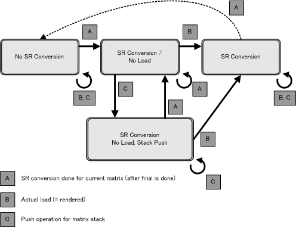

The renderer has an internal matrix stack. When the renderer carries out rendering with the 2D graphics engine, this internal stack takes care of the load processing to the matrix affine parameters. When rendering with the 2D graphics engine, the current matrix contents of the matrix stack are loaded to the OAM as affine parameters. The affine numbers need to be set up in the OAM attributes so the affine parameters are referenced.
The renderer manages the matrix state and attempts to decrease the number of loads to conserve affine parameters.
The matrix states can be divided roughly into the following categories:
Not SR(scale, rotation) converted.
SR(scale, rotation) converted, not read.
SR(scale, rotation) converted, not read. The current matrix has been pushed.
SR(scale, rotation) converted, read.
The matrix state transitions in response to events as shown in the diagram.
None.
2004/12/06 Initial version.
CONFIDENTIAL